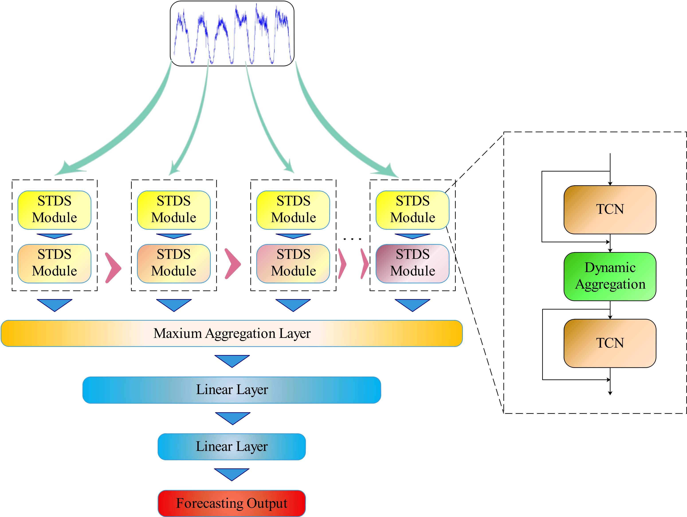
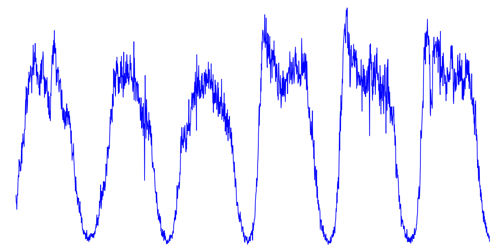

Rui Zhang 张瑞M.Sc. Candidate at Nanjing Normal University
Address: School of Electrical and Automation Engineering, Nanjing Normal University, Xuelin Road 2, Nanjing, 210023, Jiangsu,
China. |
I am currently a postgraduate student at Nanjing Normal University. The outline of my experience is as follows:
My current research interests include deep learning, graph neural network, spatial-temporal sequence forecasting and computer vision.
|  |
Rui Zhang, et al.
Spatial-temporal dynamic semantic graph neural network Neural Computing and Applicantions, 2022, CCF-C, IF 5.606 [paper] |
|  |
Rui Zhang, et al.
Spatial-temporal semantic neural network for time series forecasting International Conference on Robotics Automation and Intelligent Control (ICRAIC), 2021, EI [paper] |
|
Rui Zhang, et al.
Multiple graphs dynamic aggregation network based on spatial-temporal trend for metro ridership prediction [paper coming] |